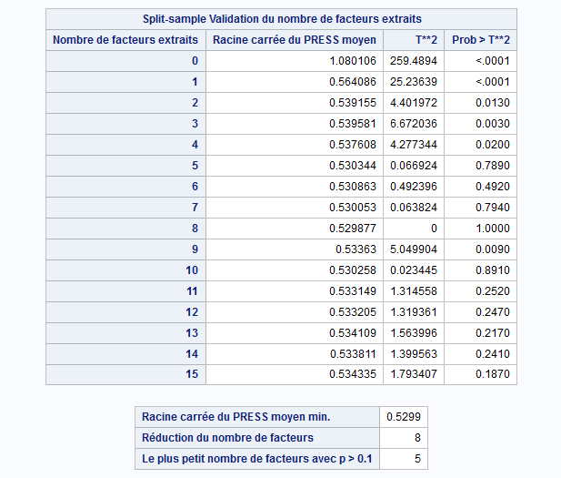
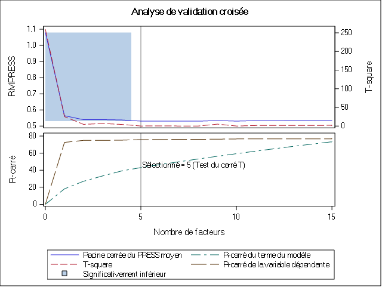
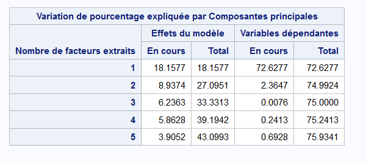

3 Modélisations
3.1 Transformations des données
Comme nous l’avions présenté dans la présentation des données, 46 des colonnes présentes dans le jeu de données ne sont pas quantitatives et continues. En effet 23 sont qualitatives ordinales et 23 autres sont qualitatives simples. Il est donc important que nous trouvions une stratégie pour inclure ces colonnes dans le modèle car ces informations qui ne sont pas nécessairement quantitatives sont importantes pour comprendre l’inertie de la variable que nous cherchons à modéliser qui est en l’occurrence le prix du bien immobilier (Sale_Price).
Pour nous assurer de l’importance d’inclure les variables non quantitatives dans le modèle, nous allons construire deux modèles de régression multiples simples. Le premier modèle inclut uniquement les variables quantitatives continues et le second modèle va inclure en plus des variables quantitatives les variables qualitatives transformées.
3.2 Modèle de régression multiple
Call:
lm(formula = Sale_Price ~ ., data = base_export)
Residuals:
Min 1Q Median 3Q Max
-611577 -18168 -1914 15215 291823
Coefficients: (1 not defined because of singularities)
Estimate Std. Error t value Pr(>|t|)
(Intercept) 173248.3794 1034265.8314 0.17 0.86698
Lot_Frontage 87.8031 21.0713 4.17 3.2e-05 ***
Lot_Area 0.2765 0.0926 2.98 0.00286 **
Year_Built 366.0522 40.8997 8.95 < 2e-16 ***
Year_Remod_Add 520.8040 43.8314 11.88 < 2e-16 ***
Mas_Vnr_Area 39.2747 4.3907 8.94 < 2e-16 ***
BsmtFin_SF_1 120.5512 399.7987 0.30 0.76303
BsmtFin_SF_2 -11.0815 4.2313 -2.62 0.00887 **
Bsmt_Unf_SF -12.3113 2.6685 -4.61 4.1e-06 ***
Total_Bsmt_SF 37.9704 3.3100 11.47 < 2e-16 ***
First_Flr_SF 61.3303 4.0088 15.30 < 2e-16 ***
Second_Flr_SF 60.4504 3.5406 17.07 < 2e-16 ***
Low_Qual_Fin_SF 12.8328 14.7913 0.87 0.38569
Gr_Liv_Area NA NA NA NA
Bsmt_Full_Bath 6293.2883 1856.1886 3.39 0.00071 ***
Bsmt_Half_Bath -1858.6131 2914.0839 -0.64 0.52365
Full_Bath 1920.7409 1998.4969 0.96 0.33659
Half_Bath -2438.2657 1935.2284 -1.26 0.20779
Bedroom_AbvGr -9685.3490 1216.2710 -7.96 2.4e-15 ***
Kitchen_AbvGr -34847.2817 3621.0884 -9.62 < 2e-16 ***
TotRms_AbvGrd 4500.6690 881.1315 5.11 3.5e-07 ***
Fireplaces 7560.9687 1265.2644 5.98 2.6e-09 ***
Garage_Cars 8144.4884 2093.4707 3.89 0.00010 ***
Garage_Area 20.9141 7.2152 2.90 0.00378 **
Wood_Deck_SF 23.0064 5.7959 3.97 7.4e-05 ***
Open_Porch_SF -6.8497 10.8546 -0.63 0.52806
Enclosed_Porch 27.8903 11.4544 2.43 0.01496 *
Three_season_porch 10.0811 26.5688 0.38 0.70439
Screen_Porch 62.8680 12.2964 5.11 3.4e-07 ***
Pool_Area -67.5348 19.3964 -3.48 0.00051 ***
Misc_Val -9.6839 1.1967 -8.09 8.5e-16 ***
Mo_Sold 87.9764 249.1791 0.35 0.72407
Year_Sold -941.5430 514.1045 -1.83 0.06714 .
Overall_Qual 4832.1477 1133.1679 4.26 2.1e-05 ***
Overall_Cond -2726.7366 1385.2232 -1.97 0.04911 *
---
Signif. codes: 0 '***' 0.001 '**' 0.01 '*' 0.05 '.' 0.1 ' ' 1
Residual standard error: 35900 on 2896 degrees of freedom
Multiple R-squared: 0.801, Adjusted R-squared: 0.798
F-statistic: 353 on 33 and 2896 DF, p-value: <2e-16La significativité globale de ce modèle de régression multiple est très bonne comme l’indique le test de Fisher. Le modèle explique 80% de la variance des prix de vente, ce qui est très bien pour des données transversales. La grande majorité des variables que nous avions sélectionnées pour inclure dans le modèle se sont montrés significatifs. Le test de Student effectué sur chacun des coefficients montre les différents dégrés de significativités des coefficients.
A cause de multicolinéarité, la variable Gr_Liv_Area qui représente la surface habitable hors étage de la maison a été enlevée du modèle.
Les variables sont toutes en niveau, nous pouvons donc interpréter les coefficients dans l’unité de la variable. Par exemple l’augmentation de la superficie du terrain (Lot_Area) d’un pied carré augmente le prix de la maison de 87.8 dollars, toute chose égale par ailleurs.
3.2.1 Le test d’inflation de la variance (VIF)
Il n’est pas possible de réaliser le test d’inflation de la variance (Variance Inflation Factor) sur le modèle car le coefficient de la variable Gr_Liv_Area n’a pas été calculé à cause de la multicolinéarité. Pour pouvoir quantifier la multicolinéarité entre les variables, nous devons donc estimer un nouveau modèle dans lequel la variable Gr_Liv_Area est absente.
Voici donc les résultats du test VIF que trouvons lorsque la variable Gr_Liv_Area est omise.
| VIF | |
|---|---|
| Garage_Cars | 5.7824 |
| First_Flr_SF | 5.6211 |
| Garage_Area | 5.4902 |
| Second_Flr_SF | 5.2394 |
| Total_Bsmt_SF | 4.8521 |
| TotRms_AbvGrd | 4.3749 |
| Year_Built | 3.4851 |
| Bsmt_Unf_SF | 3.1331 |
| Full_Bath | 2.7811 |
| Bedroom_AbvGr | 2.3083 |
| Bsmt_Full_Bath | 2.1608 |
| Half_Bath | 2.1548 |
| Year_Remod_Add | 1.9040 |
| BsmtFin_SF_1 | 1.8158 |
| Overall_Cond | 1.5940 |
| Fireplaces | 1.5306 |
| Mas_Vnr_Area | 1.4011 |
| Kitchen_AbvGr | 1.3686 |
| Enclosed_Porch | 1.2293 |
| Open_Porch_SF | 1.2220 |
| Wood_Deck_SF | 1.2216 |
| Lot_Area | 1.2132 |
| BsmtFin_SF_2 | 1.1666 |
| Bsmt_Half_Bath | 1.1625 |
| Overall_Qual | 1.1516 |
| Lot_Frontage | 1.1348 |
| Pool_Area | 1.0857 |
| Screen_Porch | 1.0833 |
| Low_Qual_Fin_SF | 1.0686 |
| Misc_Val | 1.0461 |
| Year_Sold | 1.0434 |
| Mo_Sold | 1.0420 |
| Three_season_porch | 1.0162 |
Puisqu’il n’y a aucune valeur VIF supérieure à 10, il est tentant d’affirmer qu’il n’y a pas de multicolinéarité. Car nous avons vu dans l’analyse des corrélations que certaines variables étaient fortement corrélées. Ainsi bien qu’il n’y a pas de relation linéaire exacte entre les variables, il existe des pseudo-colinéarités relativement fortes entre les variables.
Nous pouvons vérifier les autres hypothèses des OLS pour déduire la colinéarité.
3.2.2 Vérifions l’hypothèse de normalité des résidus
Nous pouvons représenter un histogramme de la distribution des résidus du modèle que nous venons d’estimer. L’une des hypothèses importantes des MCO est la normalité des résidus. Nous pouvons visuellement à l’aide de l’histogramme des résidus dire si les résidus suivent une loi normale.
 A l’aide de l’histogramme nous observons que la distribution ressemble à une loi normale, mais elle est fortement dirigée vers la droite.
Nous pouvons faire le test de Shapiro-Wilk pour tester plus formellement la normalité des résidus. L’hypothèse nulle de ce test est que la distribution est normalement distribuée.
A l’aide de l’histogramme nous observons que la distribution ressemble à une loi normale, mais elle est fortement dirigée vers la droite.
Nous pouvons faire le test de Shapiro-Wilk pour tester plus formellement la normalité des résidus. L’hypothèse nulle de ce test est que la distribution est normalement distribuée.
Shapiro-Wilk normality test
data: mod$residuals
W = 0.812, p-value <2e-16Ici la p-value est inférieure à 5% donc, nous rejettons cette hypothèse nulle, la distribution ne suit pas une loi normale.
Dès lors que les résidus ne suivent pas une loi normale, les estimations faites par les OLS sont biaisées. Il importe donc d’utiliser d’autres méthodes d’estimations pour construire le modèle.
3.3 Régressions sur variables latentes
3.3.1 Pourquoi faire une régression sur les variables latentes ?
Les méthodes de régressions sur les latentes nous permettent d’adresser certaines limites que posent les méthodes de régression sur les moindres carrés. En effet pour qu’une régression par les OLS soit sans biais il faut que les hypothèses posées par les OLS soit vérifiées. Parmi ces hypothèses nous pouvons citer l’absence de corrélations entre les variables et l’absence de multicolinéarité entre les variables.
Or en général les phénomènes que nous cherchons à expliquer, ici le prix de vente du bien immobilier, ne vérifient pas toujours ces hypothèses à cause entre autres de la non indépendance des phénomènes. Cette situation nous amène à des résultats potentiellement biasés et non généralisables pour expliquer le phénomène. La méthode de régression sur les variables nous permettent donc de corriger ces limites des régression standards en créant des variables synthétiques sur lesquelles nous allons faire les estimations. Les variables synthétiques créées lors de l’estimation présentent une propriété très intéressante qui est celle de l’orthogonalité. En effet les variables synthétiques ou les composantes ne sont pas corrélées entre elles-mêmes, ce faisant nous pouvons entièrement faire des régressions en vérifiant les hypothèses des OLS standards.
Pour mettre en place ces méthodes, nous allons utiliser la procédure PLS implémentée dans le logiciel SAS.
Les techniques mises en œuvre par la procédure PLS sont les suivantes:
La régression sur composantes principales, qui extrait des facteurs qui expliquent le plus la variance des variables explicatives.
La régression de rang réduit, qui extrait des facteurs qui expliquent le plus la variation de la variable réponse (y). Cette technique, également appelée analyse de redondance (maximale), diffère de la régression linéaire multivariée uniquement lorsqu’il y a plusieurs réponses.
La régression sur les moindres carrés partiels, qui équilibre les deux objectifs d’explication de la variation de la réponse et expliquant la variation des prédicteurs. Deux formulations différentes pour les moindres carrés partiels sont disponibles: la méthode prédictive originale de Wold (1966) et la méthode SIMPLS de de Jong (1993).
En raison du fait que nous ne cherchons ici qu’à expliquer une seule variable (y), à savoir le prix des maisons, nous n’utiliserons pas la régression sur rang réduit.
3.4 Régréssion sur composantes principales
La méthode de régression sur composantes principales consiste à effectuer une régression linéaire simple ou multiple sur les coordonnées des individus projetés dans un plan factoriel à k dimensions avec k strictement plus petit que le nombre de variables initial.
Pour cette méthode, nous allons utiliser conjointement SAS et R.
3.5 Résultats d’estimations avec SAS


Pour pouvoir déterminer avec confiance le nombre de composantes principales (ou facteurs) à retenir dans la PCR, l’algorithme utilise une technique de validation croisée. Une technique de validation croisée consiste à diviser l’échantillon en plusieurs groupes sur lesquels des ajustements successifs sont effectués. L’ajustement du modèle est effectué sur le groupe d’apprentissage et les résultats sont comparés aux observations du groupe test. L’efficaité prédictive est évaluée à l’aide l’indicateur PRESS (Predicted REsidual Sum of Squares).
Le tableau suivant nous montre que la valeur minimale de la validation croisée est atteinte si le nombre de composantes principales est 8. Toutefois il est préférable de se fier au test qui indique si oui ou non il existe une différence significative entre les 8 composantes.
Le test nous indique qu’à partir de la 4e composante il n’existe plus de différences significatives entre les composantes. Nous allons donc retenir 5 composantes pour la suite de l’analyse.

Il convient maintenant d’interpréter les résultats du modèle construit. Le tableau suivant affiche la variation de pourcentage expliquée par composantes principales

Le tableau affiche deux catégories de résultats : la variation de pourcentage expliquée par composantes principales sur les effets du modèle et sur la variable dépendante. Les effets du modèle représentent les variables explicatives tandis que la variable dépendante est le prix de la maison que nous cherchons à expliquer.
Nous voyons donc que pour les 5 composantes retenues, la régression sur les composantes principales explique près de 76% de la variable dépendante et environ 43% des variables explicatives.
Nous pouvons à partir d’ici utiliser R pour trouver les coefficients associés à chaque facteur extrait.
Call:
lm(formula = Sale_Price ~ ., data = coord_pc)
Residuals:
Min 1Q Median 3Q Max
-535355 -20542 -3320 17245 304779
Coefficients:
Estimate Std. Error t value Pr(>|t|)
(Intercept) 180796 725 249.50 < 2e-16 ***
Dim.1 27396 292 93.94 < 2e-16 ***
Dim.2 -7046 416 -16.95 < 2e-16 ***
Dim.3 479 498 0.96 0.34
Dim.4 2779 513 5.41 0.000000066 ***
Dim.5 5770 629 9.17 < 2e-16 ***
---
Signif. codes: 0 '***' 0.001 '**' 0.01 '*' 0.05 '.' 0.1 ' ' 1
Residual standard error: 39200 on 2924 degrees of freedom
Multiple R-squared: 0.759, Adjusted R-squared: 0.759
F-statistic: 1.85e+03 on 5 and 2924 DF, p-value: <2e-16Les résultats globaux du modèle que nous trouvons sont les mêmes avec R. Les 5 composantes retenues expliquent bien 75,93% de la variance des prix de vente de la maison.